Dialogue is the spine
Fix the voice first: denoise, remove mouth clicks, match levels, and make every line intelligible. Do not lay music over noisy dialogue; that only covers the problem.
If the location audio is unusable, consider ADR instead of replacing the voice with subtitles. Subtitles are support, not a substitute for sound.
Ambience is space
Record 30 seconds of clean room tone or ambience at every location. Lay it under the cut so shot changes do not feel like jumps in a vacuum.
Ambience is not noise. It tells the audience “this is a kitchen, a street, a valley.” Without it, the image feels thin.
Do not fill every second with music
Music is punctuation, not wallpaper. Save it for turns, decisions, and endings; let silence carry pressure. Build a version without music first, confirm the structure, then add it.
If the film falls apart when you remove the music, the problem is the cut, not the score.
Sound: separate three layers

Image note. Covers, diagrams and step images on this page are editorial illustrations or structure diagrams, not photographs of a test performed here; they are not evidence of measured gear performance. Where an image is AI-assisted, the caption says so. Read the test conditions in the text before treating an image as proof.